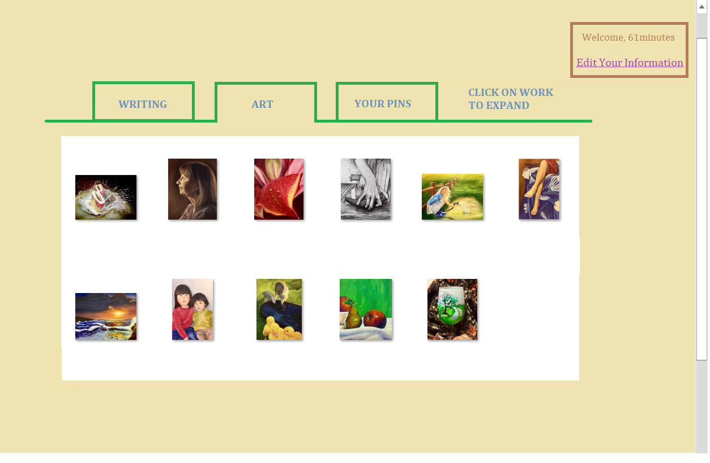
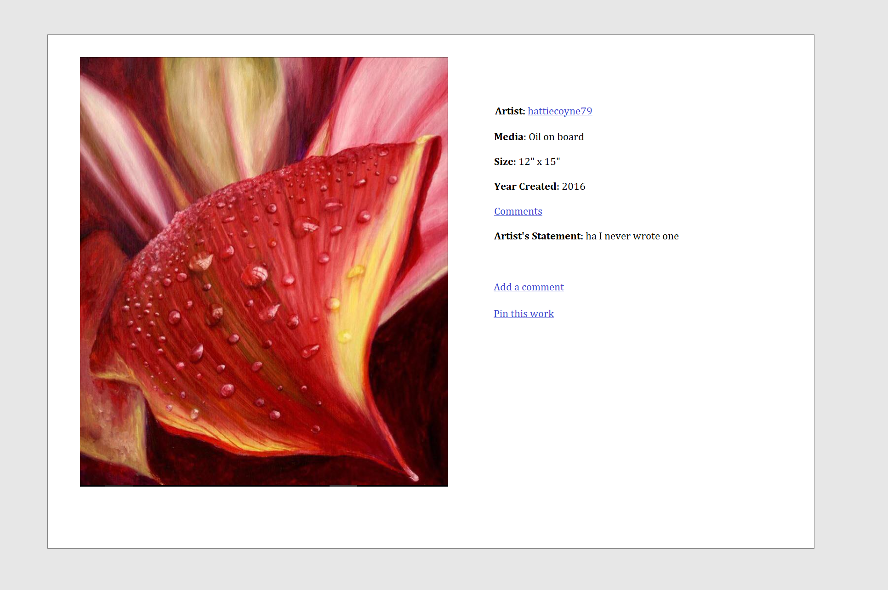
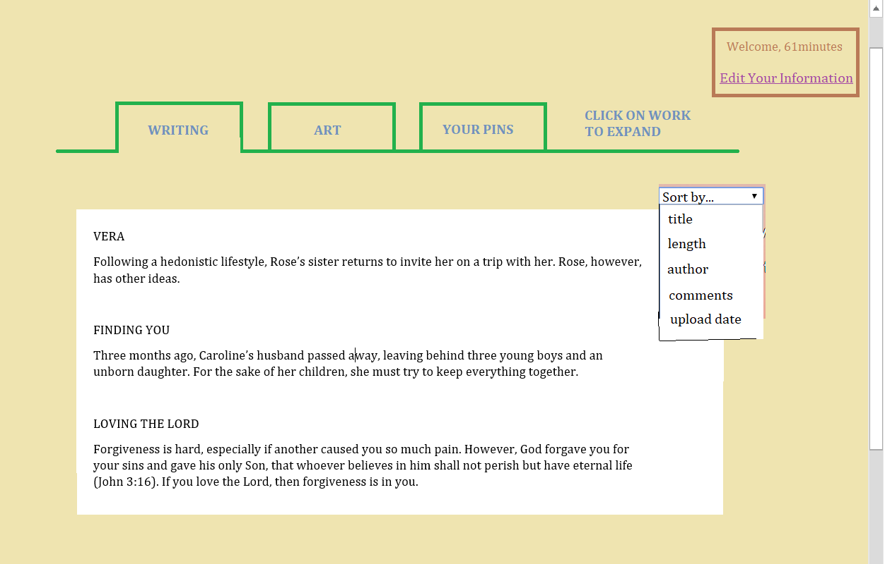
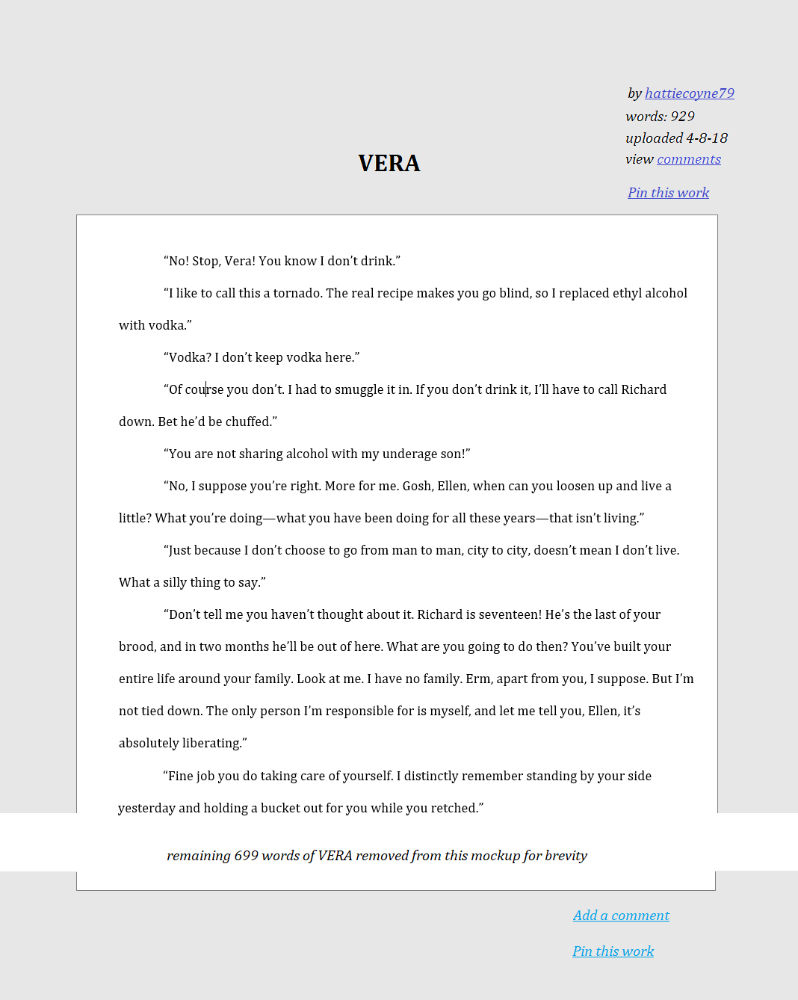

All works are licensed under a Creative Commons Attribution-NonCommercial-NoDerivatives 4.0 International License.
Largely because I’m still not 100% comfortable with Vue (an understatement), I’m hoping to use Vue on this project to continue learning. The most important feature would be the “upload” feature for both writers and artists. I would want to separate the uploads under two tabs, “art” and “writing,” but I would want both to be visible to all users no matter which they might fall under.
Having users was something I really struggled with in trello, so in this project I intend to fix that; big thing being that the website would recognize user authority over their work. In other words, only works that you uploaded are interactive to you; you can’t go deleting or editing someone else’s thing (unless perhaps they set their permissions so that others can. Something else to consider). Users should be able to access their profile at the top right of the page, and there they should have a button somewhere along the lines of "Edit Your Information". Their bio would be public to all.
A third tab would be user pins: any works would show up here if user clicked on "Pin this work" while browsing the work itself. There are many reasons one would do this, such as to come back to something for later viewing pleasure or to save for another time, etc.
If there ever became too many uploads, it would probably be convenient to have a sort or even search function.
In terms of “pre-populating,” I don’t think that will be a problem—I can very easily upload my own works on there, but I can also share a link to the work-in-progress site among my groups and have them test it out so that there will be varied data from different people and styles on the site.
As an example, here is a very rough sketch of what the site could look like made using microsoft paint for a user named 61minutes. Note that both the short dialogue and the paintings used are licensed under a creative commons license, which is available at the bottom of this page.
Clicking on the work will lead to an expanded view.
Here's a view of the writing tab:
Clicking on the writing piece will bring the user to the work itself, where they can read and comment as well as view other users' comments. Pin this work is intentionally included at both the top and bottom of the screen so that users can 1. pin as a way to return to this work (read later), or 2. pin to read again.

All works are licensed under a
Creative Commons Attribution-NonCommercial-NoDerivatives 4.0
International License.